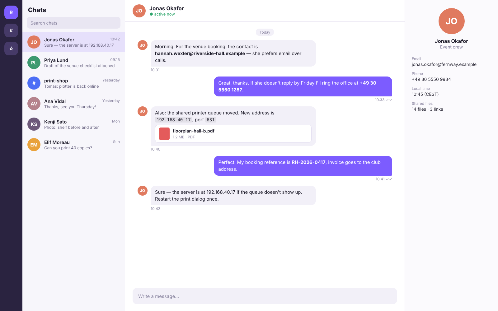

Window capture — flow
fix-window-capture-screencast · window mode picks its window in the desktop's window chooser for screen sharing (ScreenCast portal), takes one frame and closes the session. While the chooser is open, Annota shows its own waiting OSD (sheet 02), which is the chooser's parent. Replaces add-screen-capture 05 as the reference for window mode. Panels are scaled (Annota windows 45 %, monitor 1920 × 1200 at 30 %, panel b is a 1 : 1 crop); the cards below them are 1 : 1.
No delay → skip d, the frame is taken at once


 1 : 1 crop · centred like countdown 07
1 : 1 crop · centred like countdown 07
 Desktop window chooser (GNOME, not drawn by Annota)
Delay 3 s
Capture 2026-11-14 10-42-17Backup settings
Desktop window chooser (GNOME, not drawn by Annota)
Delay 3 s
Capture 2026-11-14 10-42-17Backup settings Build warningSeptember dashboardChat with Jonas
Build warningSeptember dashboardChat with Jonas
aStart window modeAnnota
Starts with: the Window card, or launcher, shortcut and command line alike
Capture Anything
Pick what to capture. The capture opens here, ready to mark up. Every annotation stays editable until you export.
RegionPrint
WindowAltPrint
ScreenShiftPrint
or open an image or .annota file withCtrlO— or drop it here
1 : 1 · Window card activated (keyboard focus + pressed)
RegionPrint
WindowAltPrint
ScreenShiftPrint
Scenarios
Window mode from the welcome page
Window on Wayland
- Unchanged UI. The same flow starts from the launcher's Window mode, the Window shortcut and
annota --capture window. - On activation Annota hides its windows, as for every capture. No screenshot UI with "Selection" opens.
bWaiting for a windowAnnota
Shown: from
Start until the chooser answers · sheet 02Waiting for a window…CancelEsc Cancel
How the OSD ends
| A window is chosen | OSD goes. Then d (only with a delay) and e. |
| Cancel or Esc | OSD goes, screen-sharing session closed, no image, no message. The next capture starts normally. |
| Chooser closed, reported | Same as Cancel. If GNOME never reports it, the OSD stays until the user cancels. |
| Chooser never appears | The OSD is all there is; Cancel ends the attempt (measured, design.md D6). |
| Second window request | Raises this OSD, starts nothing new. |
Scenarios
Waiting for the chooser
Cancel while waiting
Chooser closed
- Annota's own top-level window and the chooser's parent, so a chooser opens even from a shortcut with no Annota window open.
- Non-modal; nothing is dimmed. Not listed in the chooser.
cChoose the windowGNOME
Opens: together with b, before any countdown
Desktop window chooser(GNOME, not drawn by Annota)
Waiting for a window…CancelEsc Cancel
What Annota asks for (ScreenCast portal, design.md D1)
CreateSession
SelectSources types WINDOW multiple false
cursor_mode EMBEDDED if pointer on + offered, else HIDDEN
persist_mode 0 · no restore token, chooser every time
Start(parent) → the chooser above
OpenPipeWireRemote → one frame, then session closed
Scenarios
Window on Wayland
Window mode from the welcome page
- Drawn as a schematic placeholder on purpose. Look, wording and layout are GNOME's and vary by version; Annota draws nothing here.
- Annota's waiting OSD (b) stays next to it as its parent. Where GNOME places the chooser is GNOME's choice.
- Closing it is a cancel once GNOME reports it, see "Chooser closed" below.
dCountdownOnly with a delay
Runs: after a window is chosen, only if a delay is set
3
Capturing window in 3 s
Esc Cancel · Enter Capture now
1 : 1 · Countdown OSD, as add-screen-capture 07 · only the label changes
3
Capturing window in 3 s
Esc Cancel · Enter Capture now
Scenarios
Delayed window capture
Countdown cancelled
- Order: chooser first, countdown after. The frame is taken when it ends (or on Enter).
- The dashed "indicator" stands for GNOME's screen-sharing indicator (not drawn by Annota). It is visible while the session is open.
eWindow in the editorAnnota
Frame taken: when the countdown ends, or at once without a delay

1 : 1 · Toast, and the image's top-left corner at 4 ×
Window captured · 1280 × 800
Image edge = window edge.No shadow, no transparent margin around it. Transparent rounded corners inside the window stay (D3).
Scenarios
Window on Wayland
Window mode from the welcome page
- Same delivery as region and screen captures; only "Window" and the size differ.
- The session is closed before the editor appears, so GNOME's indicator is gone.
Cancel while waiting (Cancel or Esc)
The waiting OSD disappears and the screen-sharing session is closed, which also ends GNOME's pending request. No image, no message. The next capture starts normally.
Cancel while waitingChooser closed → nothing happens (no toast)
Once GNOME reports it: the waiting OSD disappears. No image, no Annota window, no message. Windows that were open come back as they were.
Chooser closedNo frame in 5 s → failure toast
The capture failed. Nothing was captured.
Also when no stream starts. Session closed, cause logged. Shown in the window Annota presents for messages.
No frame arrivesCountdown cancelled with Esc
No image, no message. The session closes, so GNOME's screen-sharing indicator disappears.
Countdown cancelledNo window source → screenshot UI as before
Without a WINDOW source (or without ScreenCast), window mode opens the Screenshot portal's interactive UI, as add-screen-capture 05. Ending there without an image says "Nothing was captured".
No window sourceInclude Pointer
On: the stream is asked to embed the pointer, if the portal offers that. Off: asked to hide it. Annota never draws a pointer into a window image itself.
Pointer in a window capture Cursor excluded